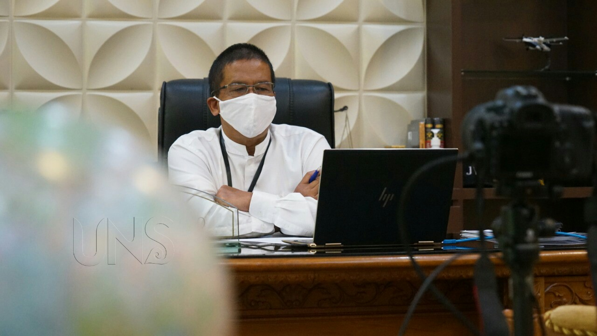

UNS Student Recovered from COVID-19

UNS — The student of Universitas Sebelas Maret (UNS) Surakarta who tested positive for Covid-19 and had been treated at the UNS Hospital for nearly three weeks has recovered. The patient is allowed to go home to her family on Sunday (26/4/2020).
The Rector of UNS, Prof. Jamal Wiwoho in an online press conference, Monday (27/4/2020) stated that UNS student who tested positive for COVID-19 keep recovering during her treatment in UNS Hospital. “We thank God, Alhamdulillah, that on April 26, 2020, one positive patient of Covid-19 was declared cured and returned to her family. During the treatment, her condition is good. According to the procedure, periodic swab test is carried out. After achieving negative results for 2 times in a row with a good clinical condition, she was declared to be cured of Covid-19,” explained Prof. Jamal.
Prof. Jamal continued that because the student’s parents are in Jakarta, she was turned over to her family representative in Solo Raya. This is because there are barriers to rules for families in Jakarta to pick her up due to Large Scale Social Distancing (PSBB) regulation.
“We hope that, in time, she can soon reunite with her family. With this good news, hopefully, we can encourage the belief that there is always hope to face the Covid-19 pandemic. With the standard care and compliance to the management principles from the Ministry of Health guidelines, hopefully, Covid-19 patients can recover,” he added.
During her treatment in UNS Hospital, the Rector of UNS often contacted the student through WhatsApp. “So, I contacted (her) often, when she went home yesterday, she said thanks to the UNS Hospital medical team for the good treatment so that she can go home and declared as recovered,” Prof. Jamal stated.
Meanwhile, the Director of UNS Hospital, Prof. Hartono added that UNS Hospital tried to prepare, together with the government and the community to face the COVID-19 pandemic. “Our position as a referral hospital and COVID-19 Testing Lab. The special floor for Isolation Ward UNS Hospital has started to accept patient. Similarly, the COVID-19 Testing Lab has received many samples. We are grateful, yesterday we got 10,000 PCR test kit from the Governor of Central Java Province. Hopefully, this will expedite the testing process,” stated Prof. Hartono.
UNS requests its students who are still in Solo not to go home, especially to the COVID-19 red zone. For the academic member of UNS who has a cough, fever above 38 Celsius, to report to the Vice Dean for Student and Alumni Affair in faculty. The Vice Dean for the Student and Alumni Affair in faculty with coordinate with the Vice-Rector for Student and Alumni Affair who will recommend a check-up in UNS Hospital. Humas UNS/Dwi
Universitas Sebelas Maret
Sekolah Vokasi
Jl. Kolonel Sutarto 150 K,
Jebres Surakarta. 57126
0271-664126
Vokasi.uns.@gmail.com
Layanan